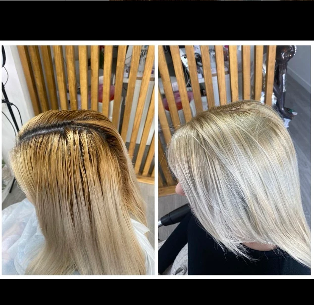

Color personalizado
Elegir el tono y planificar el cambio.
Conocer másLuz, dimensión y movimiento
Rubios que se ven cuidados, reflejos con intención y un tono que acompaña tu piel. Escuchamos lo que buscas y valoramos cómo llegar a ello desde tu color actual.
BELLEZA CON RAÍCES · EL SAUZAL
Nuestra forma de hacerlo
«Ni todos los rubios son iguales, ni todas las melenas necesitan lo mismo.»
Luz, dimensión y movimiento
Hay rubios suaves, luminosos, cálidos y más fríos. Las referencias nos ayudan, pero el punto de partida es siempre tu cabello: color actual, porosidad y tratamientos anteriores.
Estudiamos qué zonas iluminar y qué mantenimiento encaja contigo. Un cambio gradual puede ser una buena forma de construir el resultado sin precipitar el proceso.
El matiz permite ajustar los reflejos del cabello aclarado. Cuando el tono se vuelve apagado o cambia con los lavados, conviene revisar qué necesita antes de volver a trabajar toda la melena.
Valoramos el equilibrio entre luminosidad, profundidad y tono. También te explicamos por qué una imagen de referencia puede verse diferente según la iluminación y la base del cabello.

Luz, dimensión y movimiento
Los trabajos de aclaración requieren atención al estado de la fibra. Si el cabello está sensibilizado o tiene procesos previos, hablamos contigo de las alternativas y los tiempos.
El acabado puede completarse con un cuidado de nutrición o hidratación adecuado. En casa, una rutina ajustada y la protección frente al calor ayudan a mantener una apariencia cuidada.
No todas las melenas necesitan el mismo ritmo de retoque. El crecimiento, la técnica y el efecto deseado determinan cuándo revisar el color.
Los productos con pigmento deben elegirse y utilizarse con criterio. Pregúntanos antes de añadir un matizador a tu rutina: cantidad y frecuencia importan.
El cambio, a tu ritmo
Desliza y explora un cambio de rubio publicado por el salón: de un tono cálido a un acabado más frío y pulido.
Dos fotografías del mismo trabajo, con ángulos e iluminación distintos. Sin simular resultados.

Hecho en AURA
Sin dudas, sin prisas
Si hay algo más que quieras saber,
estamos al otro lado.
Necesitamos conocer el color previo y el estado del cabello. En algunos casos se plantea un proceso por etapas; el diagnóstico permite valorar la viabilidad.
Cuando el tono o los reflejos dejan de encajar con lo que buscas. La frecuencia varía según el cabello y los lavados; no existe un intervalo único.
Solo si encaja con tu tono y rutina. Un uso excesivo puede alterar el matiz. El equipo te dirá qué producto y frecuencia tienen sentido en tu caso.
Sí. La comparación y la galería de esta web utilizan fotografías publicadas del salón. Cada fotografía puede tener una iluminación y un ángulo distintos.
Hay un momento que es solo tuyo
Cuéntanos qué necesitas. Nosotras ponemos
el tiempo, las manos y el cuidado.